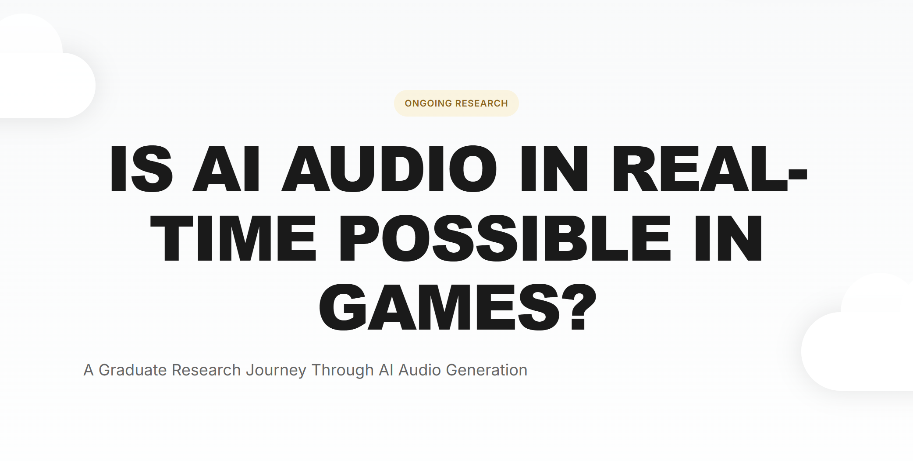

Selected Projects
Recent projects: game audio implementation, sound design, and interactive music systems.

Wwise Middleware Implementation
Complete Wwise + Unreal Engine implementation: spatial audio, Game Syncs, RTPCs, States/Switches.

Wwise UE Fixer
C++ tool that automates Wwise-UE integration fixes. Saves hours of debugging. Production-tested.

AI Audio Research
Graduate research exploring real-time AI audio generation for games.
Interactive Music Design
Adaptive audio systems with vertical layering in Wwise.
Three Wwise Projects
Voice limits, spatial audio, and mobile optimization. School projects on middleware mechanics.
Pause & Deserve
Psychological horror game with strategic pause mechanics.
Not Today, Darling!
Retro-inspired audio implementation for chaotic multiplayer racing game.
Amorak
Atmospheric soundscapes and creature audio for horror animation.
Transientica: AudioLab
Real-time ML beatbox classification with 45ms latency.
Akantilado
Complete foley and jungle ambience for 3D animation.
Sound Design Showcase
Professional audio post-production: mixing, mastering, 3D audio, and DAW workflow.